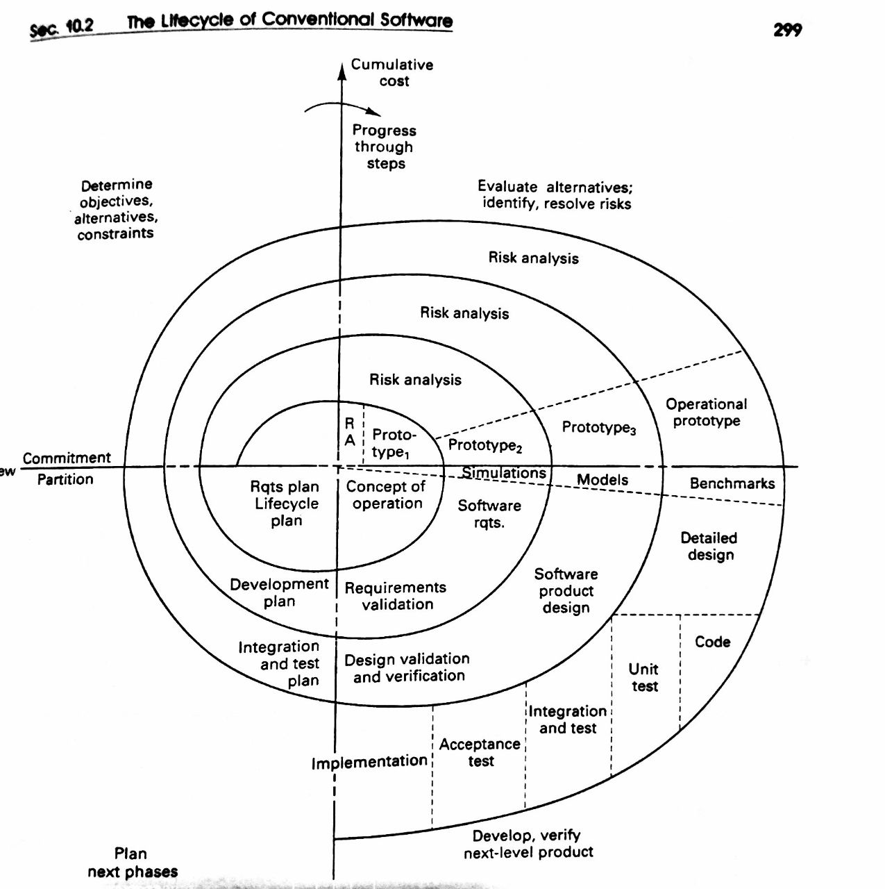

Ciclo de vida
- Identificación:
R= Identificacion del problema, explorando las ventajas y desventjas de implementar e usar un sistema de inforamción.
- Conceptualización
R= Comunicacion y determinacion del alcanze del proyecto junto con sus funcionesrequisitos,, limitantes, alcance, desempeño partiendo de la decicion del cliente.
- Formalización
R= Estado donde se desarrolla un prototipo junto con un posible diseño fisico del producto.
- Implementación
R= Documentacion interna y externa del sistma, involucra el hecho de programar y/o usar herramientas para desarrollar le sistema en cuestión, a la ves incluye cualquier etapa de integracion del sistema pra poderlo ver implementado parcial o completamente
conforme a los requisitos establecidos.
- Pruebas
R= Verificación del funcionamiento del sistema.
- Evaluación
R= Validación del sistema.
- Mantenimiento
R= Etapa mas cara del desarrollo se basa en las actualizaciones que se le da al sistema
- "Phase out"
R= Punto critico en el que el sistema se vuelve obsoleto y debe ser sustituido por algun otro sistema o tecnologia.
Reference: "Carrico, M., Girard, J., & Jones, J. (1989). Building knowledge systems. New York: Intertext Publications."

El ciclo de desarrollo apoya al ingeniero en estructurar, depurar, modificar y expandir el conocimiento obtenido por el experto.
Este ciclo normalmente consta de 3 partes:
- Herramienta de adquisisión de información:
Apoya al ingeniero en la construccion de la base de información. Es el editor base, este permite al ingeniero realizar los cambios que el desee.
De una manera complicada lo que hace el sistema es ayudar a corregir "bugs", comparar la informacion existente con la nueva, permite el seguimiento de cambios, trata de adivinar lo que busca realizar el ingeniero.
Finalmente podemos decir que provee asistencia pra reducir el tiempo de producción
- Base de datos de casos de prueba:
Debido a que el ingeniero puede realizar constantes cambios gracias a la herramienta de adquision de informacion, usualmente el sistema de informacion cuenta
con un verificador de integridad, asi por cada cambio que realize o altere la BD se puede comprobar si esta sigue funciionando y si no s eha causado un daño a mayores.
- Interfaz de desarrollador
Es el componente final del ciclo, esta interface permite comunicar, accesar y visualizar la informacion contenida en el sistema en modo operando.
Tecnicamente hablando, es le producto final que recibira el usuario y como podra interactuar a través de esa interfaz, suele ser amigable y muy grafica